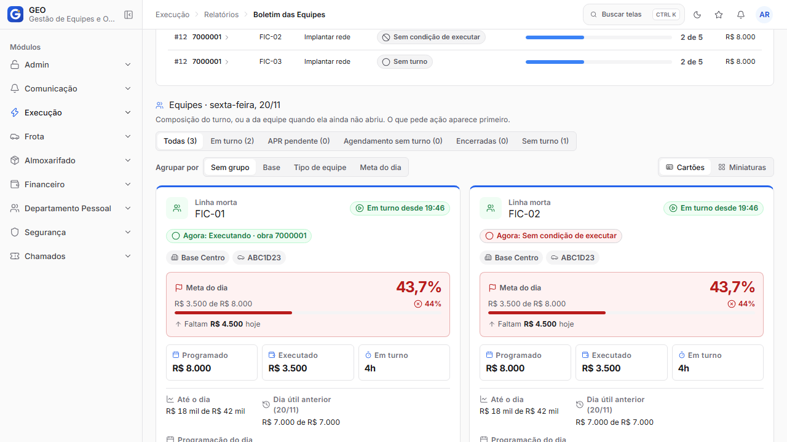
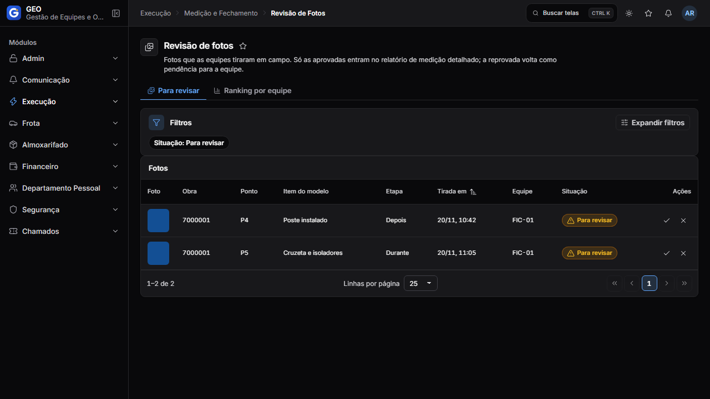
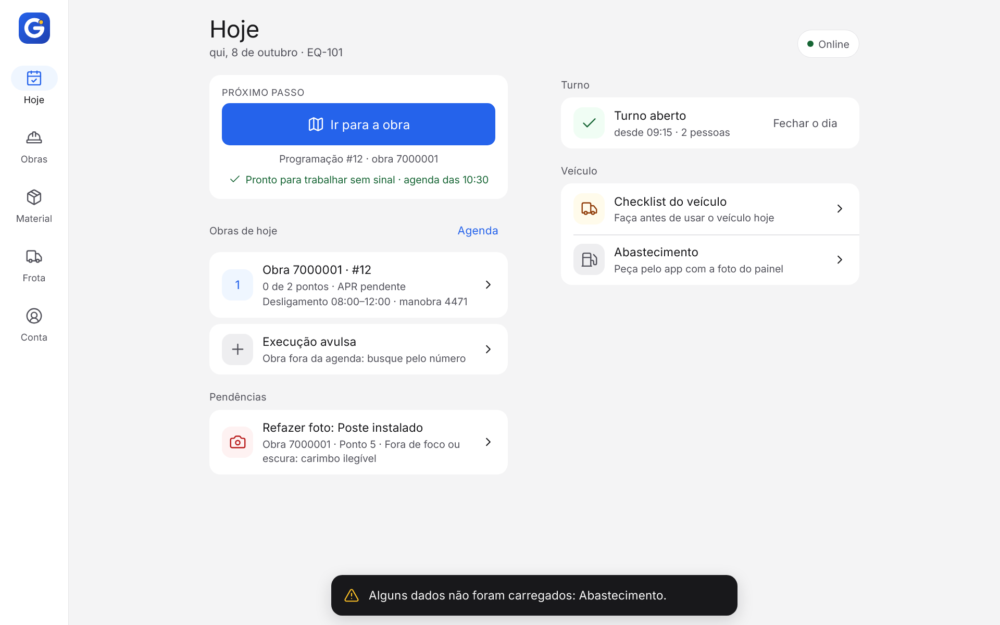
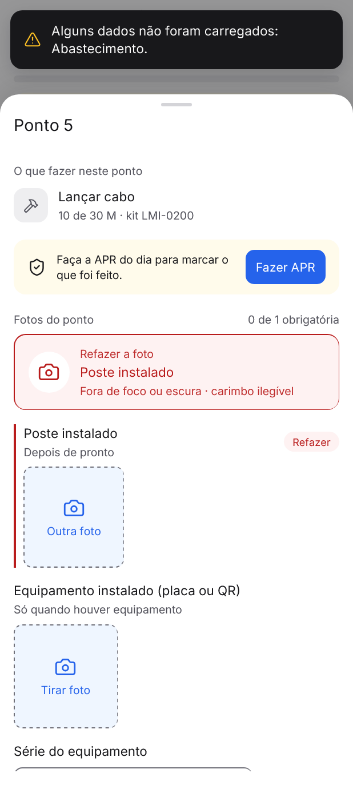
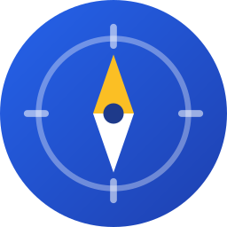
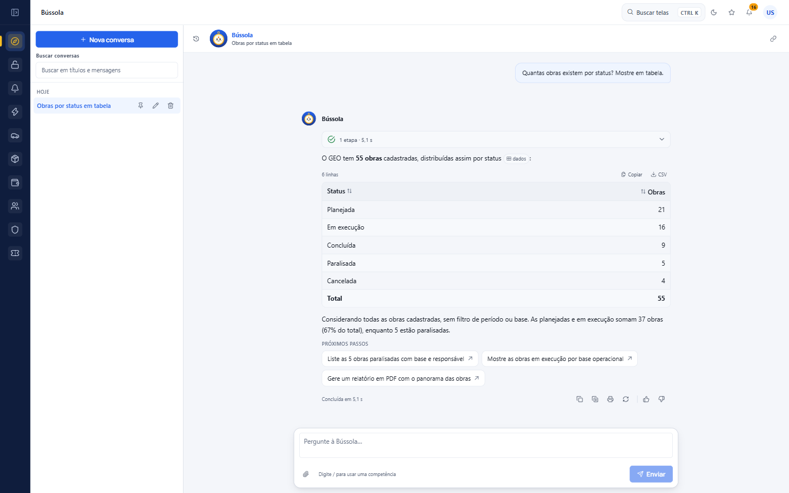
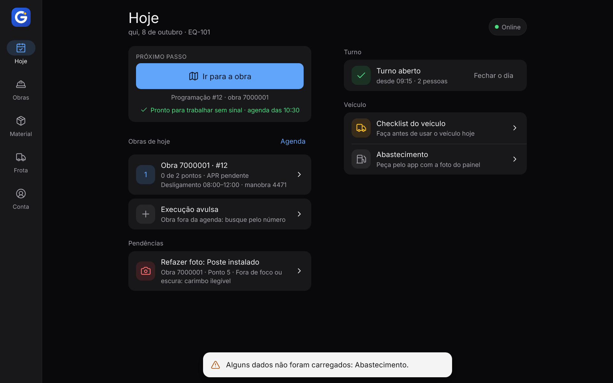

Contexto do produto, tudo o que o sistema faz, identidade visual e design system do GEO, reunidos para quem ainda não conhece o sistema.
Este documento apresenta o GEO do zero, sem pressupor que você já viu o sistema: o que ele é, tudo o que faz, como se parece e como foi construído visualmente. A Parte 1 dá a visão geral; as outras partes aprofundam e servem de consulta.
GEO — Gestão de Equipes e Operações é a plataforma de gestão operacional de empresas que constroem e mantêm redes elétricas: as prestadoras de serviço que executam obras de distribuição de energia para as concessionárias.
Essas empresas têm dezenas ou centenas de eletricistas espalhados em equipes de campo, cada uma com um veículo, trabalhando em obras distantes, muitas vezes em áreas sem sinal de celular. No escritório, gestores, programadores, almoxarifes, técnicos de segurança e o financeiro precisam saber o que cada equipe vai fazer, o que fez, com que material, com que segurança, e quanto daquilo pode ser cobrado da concessionária.
O GEO reúne tudo isso num só lugar: a obra, as equipes, o material, a frota, a segurança, o dinheiro e as pessoas. A obra é o centro. Quase tudo no sistema existe para que ela seja planejada, executada, documentada e medida com o menor retrabalho possível.
Usado no computador pelo backoffice: cadastra e acompanha obras, planeja sobre o projeto, programa as equipes, atende o material, mede, fecha, cuida da frota, da segurança, do financeiro e do pessoal. Interface densa e rápida, feita para quem passa o dia nela.
Usado no tablet ou celular pelo encarregado da equipe. Mostra o dia de trabalho, guia o turno, a análise de risco (APR), o que fazer em cada poste, as fotos e o relatório do dia. Funciona sem sinal e envia tudo sozinho quando a conexão volta. É instalado pelo navegador, sem loja de aplicativos, em Android e iPhone.
“A operação inteira, do campo ao escritório.”
É a manchete usada hoje na tela de entrada do sistema.
O GEO não é um aplicativo de uma função. São dez áreas integradas, mais o app de campo e uma assistente de IA:
| Área | O que faz, em uma linha |
|---|---|
| Obras (Execução) | Carteira, planejamento sobre o projeto, programação das equipes, acompanhamento de campo, documentação técnica, medição e fechamento. |
| App de campo | O dia da equipe: turno, APR, pontos do projeto, fotos com carimbo, ocorrências e relatório diário, sem depender de sinal. |
| Almoxarifado | Solicitações de material, separação, entrega, devolução, transferências e saldos por estoque e por obra. |
| Frota | Veículos, manutenção (ordens de serviço e preventiva), checklist diário, abastecimento, pneus, documentos, seguros, sinistros e telemetria. |
| Segurança (SST) | Inspeções, desvios e tratamento, eventos de segurança (acidentes e incidentes), metas e painéis. |
| Financeiro | Pedidos de compra e pagamento com aprovação, documentos fiscais, fornecedores e contratos com o valor de cada serviço. |
| Departamento Pessoal | Colaboradores, funções, descontos em folha com fluxo de validação e termo assinado, medidas disciplinares. |
| Chamados | Atendimento interno com tópicos, filas e prazos (SLA). |
| Comunicação | Mural de comunicados com confirmação de leitura, notificações em tempo real, preferências e regras de aviso. |
| Automações | Editor visual de fluxos: gatilhos, condições, consultas, IA, e-mails e aprovações, sem programar. |
| Bússola (IA) | Assistente que conversa com os dados, analisa painéis, gera relatórios e lê o projeto da obra em PDF. |
| Administração | Usuários, perfis de acesso com permissões finas, sincronização do app e saúde do sistema. |
Problemas comuns ao setor, descritos sem citar nenhuma empresa, e como o GEO responde a cada um.
| Problema comum no setor | Como o GEO resolve |
|---|---|
| Informação espalhada em planilhas, grupos de mensagem, papel e sistemas que não conversam. | Um só sistema para obra, equipe, material, frota, segurança, financeiro e pessoal. A ficha da obra liga tudo o que diz respeito a ela. |
| Retorno de campo atrasado: o escritório só sabe o que foi feito dias depois, quando o papel chega. | A equipe registra no app na hora, mesmo sem sinal. O boletim do dia mostra quem está em turno, executando, parado ou sem condição. |
| Sem sinal na obra, o aplicativo trava e a equipe volta ao papel. | O app foi desenhado para funcionar sem sinal do começo ao fim: abre turno, faz APR, aponta e fotografa offline; os dados sobem sozinhos, na ordem, quando a conexão volta. |
| Planejamento no papel ou refeito à mão a partir do PDF do projeto. | O planejamento é feito em cima do próprio PDF do projeto: pontos, vãos e kits construtivos marcados na folha. A Bússola pode ler os pontos numerados do projeto e sugerir o levantamento. |
| Programação sem visão de capacidade: equipe ociosa num dia, sobrecarregada no outro. | Agenda por equipe com semana e mês, arrastar e soltar, conflitos sinalizados, equipes livres destacadas e projeção da meta de cada equipe antes de programar. |
| Valor que muda no caminho: o preço do serviço muda entre o planejado e o cobrado. | Ao programar, o valor dos serviços fica congelado. É esse valor que conta no realizado e na medição, mesmo se a programação mudar de equipe ou de data. |
| Medição lenta e com glosa por falta de evidência. | Fotos de cada ponto com carimbo (obra, ponto, data, GPS), revisão de fotos antes de medir, As Built por ponto e relatório detalhado orçado × executado × faturado com as fotos aprovadas. |
| Material sem rastro: não se sabe quanto foi para a obra, quanto foi aplicado e quanto voltou. | Solicitação, separação, entrega com número de série, devolução como novo ou sucata, e saldo por obra (entregue − aplicado − devolvido). |
| Segurança reativa: análise de risco feita depois, ou não feita. | A APR é feita no app antes do serviço; sem uma APR concluída no dia, nada pode ser apontado. Inspeções, desvios com prazo e responsável e painéis de acidentalidade. |
| Veículo parado sem ninguém saber por quê. | Checklist diário do veículo no app, pendências viram ordem de serviço, preventiva por plano, disponibilidade, abastecimento aprovado e conferido. |
| Relatórios feitos à mão no fim do mês. | Painéis prontos em cada área e a Bússola, que responde perguntas sobre os dados em linguagem simples e gera tabelas, gráficos e relatórios. |
Pontos, vãos, kits construtivos, linha viva, desligamento, manobra, APR, As Built, book de fotos e medição por competência são conceitos nativos, não adaptações de um sistema genérico.
Não é “modo offline” de enfeite: o dia inteiro da equipe funciona sem conexão, e o que foi lançado sobe uma vez só, na ordem, com a hora em que foi feito.
Cada etapa conversa com a próxima: a ficha mostra o próximo passo, os pontos de atenção e atalhos já filtrados para a obra. O sistema orienta, mas não trava a operação.
O previsto da obra nasce em cima do PDF do projeto, com kits e valores. A mesma folha é usada pela equipe no app, com os pontos coloridos por situação.
A Bússola consulta e analisa os dados da operação, lê projetos e fotos, e só grava algo depois que a pessoa confirma. Ela vê só o que a pessoa pode ver.
Foto com carimbo, revisão antes de medir, As Built e relatório detalhado reduzem a discussão na hora de cobrar o serviço.
Almoxarifado, frota, segurança, financeiro, pessoal, chamados e comunicação no mesmo login, com os mesmos padrões de tela.
Cada empresa tem sua própria instalação, com seus dados separados. Cada pessoa vê só o que o perfil dela permite.
Quem decide a compra costuma ser a diretoria e a gestão de operações, mas o GEO é usado por quase todas as áreas da empresa. Cada perfil tem a sua parte do sistema.
| Quem | Onde usa | O que faz no GEO e o que ganha |
|---|---|---|
| Diretoria e gestão | Web | Acompanha produção contra meta, carteira de obras, medição, frota, segurança e financeiro em painéis. Pergunta à Bússola em vez de pedir relatório. |
| Administrativo de obras | Web | Cadastra obras (uma a uma ou por planilha), anexa documentos, completa fichas As Built, gera documentos. |
| Levantador / projetista | Web | Marca pontos, vãos e kits sobre o PDF do projeto, com ajuda da Bússola na leitura. |
| Programador e supervisor | Web e app | Programa as equipes na agenda, reprograma com motivo, acompanha o dia pelo boletim; no app, vê a situação de cada equipe agora e lança a visita prévia. |
| Encarregado da equipe | App | Abre o turno, faz a APR, segue o “próximo passo”, aponta o que foi feito por ponto, tira as fotos pedidas, registra ocorrências e fecha o dia com o relatório já montado. |
| Medição | Web | Revisa fotos, gera medições parciais ou por ciclo, estorna com justificativa, monta o relatório detalhado e o fechamento. |
| Almoxarife | Web | Atende solicitações em quadro (kanban), entrega com números de série, registra devoluções e ajustes, confere saldos. |
| Gestor de frota | Web | Trata pendências do checklist, conduz ordens de serviço, aprova abastecimentos, controla preventiva, pneus, documentos e seguros. |
| Técnico de segurança (SST) | Web | Faz inspeções, trata desvios, registra eventos e acompanha metas e painéis de acidentalidade. |
| Financeiro | Web e e-mail | Recebe pedidos de compra e pagamento, aprova ou rejeita (inclusive pelo link no e-mail), confere documentos fiscais. |
| Departamento Pessoal | Web | Mantém o quadro de pessoal e conduz descontos em folha do lançamento ao termo assinado. |
| Todos | Web | Abrem chamados, leem e confirmam comunicados, recebem notificações, conversam com a Bússola. |
No GEO, quem está no escritório programa e analisa; quem está em campo executa e registra. Supervisores não abrem turno nem preenchem APR pela web: isso é da equipe, no app. Essa divisão deixa cada tela simples para quem a usa e garante que o registro de campo foi feito em campo.
Este é o coração do produto. A obra percorre onze etapas em quatro fases.
| Etapa | Quem faz | O que sai dali |
|---|---|---|
| Cadastros de obras | Administrativo | Kits construtivos (conjuntos padrão de serviços e materiais), status, agentes, tipos de anexo e checklists. |
| Carteira e ficha | Administrativo, gestor | A obra com responsáveis, prazo, valor, contrato e localização. |
| Visita prévia | Supervisor | Checklist do local com evidências (fotos e PDFs) e documento em PDF. |
| Planejamento | Levantador | Pontos, vãos e kits sobre o PDF do projeto: o previsto da obra, com valor. |
| Pré-fechamento | Gestor | Levantamento conferido: nenhum ponto ou vão sem kit. |
| Materiais | Supervisor, almoxarife | Material entregue e saldo da obra. |
| Programação | Programador | Equipe, período, condições da intervenção e valor congelado. |
| Campo | Equipe, pelo app | Turno, APR, apontamentos, fotos, ocorrências e relatório diário. |
| Documentação técnica | Equipe, supervisor, administrativo | Book de fotos por ponto, fichas As Built e equipamentos instalados. |
| Medição | Medição | Serviços concluídos levados à cobrança, pelo valor congelado. |
| Fechamento | Gestor, medição | Consolidado da obra e pacote orçado × executado × faturado. |
No planejamento e no app, cada local do projeto mostra em que ponto está, com uma cor por situação:
“Atrasado” marca o que passou do período programado sem terminar. Depois de medido, o serviço sai da fila “A medir”.
A ficha da obra mostra pontos de atenção (“Visita prévia não realizada”, “Sem equipe alocada”, “Nenhum material solicitado”, “Sem coordenadas”, alertas de prazo) e o próximo passo, mas quase nada bloqueia a operação. As exceções são de segurança: sem APR concluída no dia, a equipe não aponta serviço.
Descrição detalhada, módulo por módulo, do que está disponível hoje.
Cadastro da obra com número, título, escopo técnico, processo, base operacional, município, centro de custo, supervisor, coordenador, fiscal da concessionária, prazo, valor de projeto, equipes e localização (GPS do aparelho, escolha no mapa ou coordenadas). Obras podem ter subprojetos vinculados.
Importação em lote por planilha: cadastro de obras, carteira do contrato ou serviços e orçamento previstos. Obras existentes são atualizadas pelo número.
Painel de obras com filtros (status, base, município, responsáveis, datas, valor), totais do recorte (valor de projeto, material e serviço previstos) e exportação.
Ficha da obra: linha do tempo de prazo (início, previsão, prazo regulado, conclusão e hoje), indicadores, pontos de atenção, materiais da obra com saldo em campo, programação, orçamento previsto, documentação técnica, anexos, subprojetos, mapa com obras próximas num raio de 5 a 50 km, deslocamento da base, histórico de status e equipes. Botões para planejar, abrir a Bússola com o contexto da obra, pedir e devolver material e imprimir.
Status automático: o primeiro apontamento de campo coloca a obra em execução.
Checklist feito no local antes da execução (acesso, interferências, necessidades), a partir de modelos configuráveis com grupos de perguntas (escolha, múltipla escolha, texto, número, data), resposta “conforme” e “não se aplica”. Evidências por pergunta ou gerais (fotos e PDFs, anexadas ou tiradas na hora). Gera PDF. Pode ser lançada pela web ou pelo supervisor no app.
O PDF do projeto vira a área de trabalho. Ferramentas de folha: mão, ponto (cada poste, numerado em sequência), vão (trecho entre dois pontos, com metragem), anotar, selecionar, área, ler texto do PDF; troca de página, giro, zoom e esmaecer o desenho.
Cada ponto recebe tipo, barramento, execução com ou sem desligamento, poda e aterramento. Kits construtivos são aplicados a pontos e vãos (instalar ou retirar, com quantidade); os itens em metro acompanham a metragem do vão. Uma árvore lateral mostra pontos, kits e vãos, e o orçamento da obra se forma na hora.
Planejar com a Bússola: a assistente lê os pontos numerados da página do projeto; a pessoa revisa a leitura, aceita ou descarta cada ponto e vão e informa as metragens.
Tela de conferência de todas as obras: quais têm levantamento pendente, quais estão prontas para concluir, quantos pontos e vãos estão sem kit, quem levantou. Concluir e reabrir o levantamento, com filtros por situação, base, município, supervisor, prioridade e tipo de execução.
Nova programação pela agenda ou direto do planejamento: escolher a obra, marcar os pontos e vãos, definir período, condições da intervenção (linha viva, desligamento, finaliza obra, turno, situação, horário do desligamento e número da manobra) e a equipe.
Antes de confirmar, o sistema mostra a projeção de cada equipe: capacidade por dia, dias úteis, meta do período, já programado, esta programação e % da meta.
Ao programar, o valor dos serviços fica congelado e a equipe recebe a programação no app, também sem sinal, com aviso quando ela muda.
Agenda de Programação em tabela, semana ou mês; arrastar a barra muda dia ou equipe, esticar pelas pontas muda a duração, com desfazer. Marcas de conflito (duas programações nos mesmos dias e turnos) e de equipe livre no período. Indicadores de programações, atrasadas, equipes livres e obras a programar (as de prazo mais curto primeiro).
Detalhe da programação: programado × realizado, editar, reprogramar (novo período ou equipe, com motivo, sem mudar o valor congelado), cancelar com motivo (os itens voltam a pendentes), copiar para outra equipe e histórico completo.
Histórico de programação em linha do tempo ou tabela: cada criação, edição, reprogramação, cancelamento e exclusão, com equipe de origem e destino, período antigo e novo, quem alterou e o motivo.
Painel de Programação: cumprimento, realizado × programado, reprogramações, ocupação das equipes, próximos 14 dias (ocupadas e livres, com desligamento e linha viva), por que a agenda muda (motivos), obras que mais mudaram, atrasadas e planejadas sem programação, por base.
Turnos: cada turno de cada equipe com realizado contra a meta, serviços do dia, situação da APR (com a APR completa: atividade, riscos, medidas, participantes), composição da equipe, ocorrências, relatório diário e fotos. Alertas de turno esquecido, encerrado pelo sistema e execução sem APR.
Boletim das Equipes: a foto do dia. Turnos, executado no dia, APR pendente, equipe programada que não abriu turno, executado × programado por equipe, e um cartão por equipe com situação agora (executando, a caminho, na obra, parada, sem condição de executar), meta do dia (“Faltam R$ …” ou “Meta do dia batida”), programado, executado e componentes.
Dashboard Operacional: produção de cada equipe no período contra a meta e se o ritmo atual fecha o mês; produção × meta por dia, mês e equipe; obras atendidas; equipes abaixo do ritmo.
Metas de faturamento por equipe, por mês ou por ciclo (26 a 25), com histórico preservado.

Book de fotos: as fotos de cada ponto, conforme o modelo pede (antes, durante, depois), chegando pelo app ou lançadas pela web. Cada foto guarda quando foi tirada e lançada, por quem, coordenadas, item, legenda e etapa.
Revisão de fotos: fila das fotos enviadas pelas equipes para aprovar ou reprovar. Reprovar pede a inconformidade (fora de foco, item errado, ângulo, ponto errado, sem carimbo) e o motivo; a foto sai da medição e volta como pendência no app da equipe, com o motivo. Ranking por equipe mostra a qualidade das fotos de cada uma nos últimos 30 dias.
As Built: ficha por ponto executado e geração de versões do documento a partir do projeto mestre, com histórico de versões geradas.
Equipamentos: registro, por ponto, do equipamento instalado (religador, regulador), trafo auxiliar e série (lida por QR no app).
Relatórios técnicos de visita prévia, As Built e book, no padrão de relatório do sistema, com carimbo técnico nas fotos.
Fila A medir com as obras que têm serviço concluído e não medido (a mais valiosa primeiro) e há quanto tempo esperam. Medição parcial (até hoje) ou por ciclo (até o fim da competência), com valor de projeto, já medido, saldo e pendente. O valor é a soma dos apontamentos pelo valor congelado na programação. Estorno com justificativa devolve os serviços para nova medição, mantendo o histórico.
Fechamento de obras: cole os códigos de várias obras e receba o consolidado de execução, kits, planejado, executado, já medido, serviços, materiais e medições, exportável em Excel.
Relatório detalhado de medição: a partir de uma planilha de orçado e faturado, monta o pacote orçado × executado × faturado por serviço, com assinaturas, data de corte e, se quiser, as fotos aprovadas do book. Sai em Excel, PDF e fotos.

O app é um PWA: instalado pelo navegador, sem passar por loja de aplicativos. Foi desenhado a partir do dia real da equipe: pré-preencher, guiar e nunca travar por falta de sinal. Quem usa é o encarregado da equipe; a maior parte do uso é em tablet. O que é lançado sem sinal fica no aparelho e sobe sozinho, uma vez só, na ordem, com a hora em que foi feito.
Execução avulsa para obra fora da agenda (emergência, pedido da supervisão): busca pelo número, escolhe o motivo e começa; o que for apontado vai para a medição. Ir além do programado mostra outros pontos da mesma obra ainda sem programação, mesmo sem sinal.
Frota no app: checklist diário do veículo com fotos e pedido de abastecimento com a foto do painel.
Supervisor no app: a situação de cada equipe agora (a caminho, na obra, executando, parada, sem condição), a visita prévia e o pedido de As Built e de book.
Se o servidor recusar algo lançado offline (por exemplo, a programação foi cancelada enquanto a equipe estava sem sinal), o app mostra o motivo e o caso vai para o backoffice resolver, sem perda de dado.


Um editor visual de fluxos (blocos ligados num canvas) para automatizar rotinas. Exemplos do que dá para montar: “toda segunda às 7h, liste os desvios em aberto, resuma com IA e mande por e-mail para os supervisores”.
| Grupo de blocos | Exemplos |
|---|---|
| Gatilhos | Agenda (recorrência), executar manualmente, quando outra automação falha. |
| Controle | Condição, escolher caso, para cada, repetir até, ramos paralelos, esperar, encerrar. |
| Dados do GEO | Consultar dados do GEO, buscar colaborador, listar pessoas, desvios em aberto, metas de inspeção da semana. |
| Tratar dados | Filtrar, ordenar, agrupar, calcular total, criar tabela, compor texto, ler JSON, formatar. |
| Inteligência artificial | Bússola analisa, resumir, classificar, extrair informações, executar prompt. |
| Pessoas, avisos e aprovações | Escolher destinatários por regra, avisar pessoas, enviar e-mail, pedir aprovação. |
| Integrações | Chamar um endereço HTTP de outro sistema. |
Cada execução fica registrada com o caminho percorrido, para conferir o que aconteceu.
A Bússola é a assistente de inteligência artificial do GEO. Ela entende perguntas em português simples e responde com os dados reais da operação: “quantas obras estão paralisadas e por quê?”, “quais equipes estão abaixo do ritmo este mês?”, “compare o consumo de combustível da base Norte com o do mês passado”.


| Recurso | Como funciona |
|---|---|
| Busca de telas (Ctrl+K) | Digite parte do nome e vá direto à tela; favoritos com a estrela. |
| Filtros que viram link | Cada filtro ativo vira um chip; o recorte fica no endereço da página, e copiar o link compartilha a mesma visão. |
| Indicadores clicáveis | Cartões com números no topo das telas; clicar filtra a lista. |
| Exportar e importar | Exporta o recorte filtrado em CSV ou XLSX; importa planilhas conferidas linha a linha, mostrando os erros antes de gravar. |
| Atalhos de teclado | / busca na lista, F filtros, N novo registro. |
| Guia da tela | Ajuda contextual que explica regras de cálculo, filtros e botões. |
| Voltar inteligente | “Voltar” devolve ao ponto exato de onde a pessoa veio, com os mesmos filtros. |
| Relatórios no mesmo padrão | Todos os relatórios de detalhe saem com o mesmo layout de folha e cabeçalho da empresa, prontos para PDF ou papel. |
| Tema claro e escuro | Alternância no topo; o escuro está em fase beta. A impressão sai sempre clara. |
| Histórico e auditoria | As mudanças importantes ficam registradas com quem fez, quando e por quê. |
O app guarda no aparelho o que precisa para o dia e o que a equipe lança. Ao voltar a conexão, envia uma vez só, na ordem. A sessão não cai por falta de rede: só termina quando a pessoa sai.
Cada empresa cliente tem sua própria instalação do GEO, com seus dados separados. Não é um ambiente compartilhado entre empresas.
Permissões finas por módulo e ação. Recortes como base operacional e centro de custo servem de filtro de consulta.
Sistema web no navegador do computador; app instalado pelo navegador em Android e iPhone, otimizado para tablet e celular.
Automações chamam outros sistemas por HTTP; assistentes de IA externos podem ser autorizados a consultar o GEO; dados entram e saem por planilha.
O GEO é oferecido como serviço (SaaS), com termos de uso e política de privacidade publicados no próprio sistema.
GEO é a sigla de Gestão de Equipes e Operações. Escreva sempre em maiúsculas, sem pontos (não “G.E.O.” nem “Geo”). A sigla também lembra geografia e território, o que combina com equipes espalhadas em campo e com a ilustração de curvas de nível da marca. Na primeira menção da página, use a forma completa: “GEO — Gestão de Equipes e Operações”.
O logo é um “G” aberto branco num quadrado azul de cantos arredondados, com um ponto âmbar no fim do traço. O ponto representa a equipe em campo (o mesmo ponto âmbar que pulsa no mapa da ilustração). É a única forma de representar o produto: não existe logotipo com a palavra desenhada; o nome “GEO” é escrito ao lado em Inter Semibold.
| Elemento | Especificação |
|---|---|
| Quadrado | 100 × 100, raio 26. Gradiente diagonal (canto superior esquerdo → inferior direito) de #2563EB para #1E40AF. |
| G | Traço branco #FFFFFF, espessura 12, pontas e junções arredondadas. Caminho SVG: M71.2 34.5 A26 26 0 1 0 76 50 H52. |
| Ponto | Círculo em (71,5; 31), raio 7,5, âmbar #FBBF24, contorno #1E40AF de 3 na versão com quadrado. |
| Variante mono | Só o traço do G na cor do texto (branco ou cinza-escuro) e o ponto âmbar sem contorno. Para usos pequenos sobre superfícies já coloridas. |
O arquivo-fonte está no código do produto (frontend/src/app/design-system/primitives/brand/geo-logo.component.ts); peça ao time o SVG exportado e os ícones PNG do app (72 a 512 px).
O avatar que está hoje no produto é uma bússola com rosto, olhos, bochechas e sorriso. Ele vai ser remodelado porque passa uma impressão infantil, que não combina com um produto profissional para o setor elétrico. As capturas deste documento ainda mostram a versão antiga; não a reproduza.
Atual (sai): personagem com rosto, gradiente creme e laranja e “emoções” animadas.
Direção proposta: símbolo geométrico, sem rosto, da mesma família do logo do GEO.
#2563EB → #1E40AF), traços brancos com pontas arredondadas e o âmbar #FBBF24 como único destaque, na ponta norte da agulha, ecoando o ponto do “G”.A proposta acima é um ponto de partida, ainda não aprovado. Enquanto a versão final não sai, o ícone de traço compass da Lucide representa a Bússola.
Gramática: o nome continua feminino: “a Bússola respondeu”, “pergunte à Bússola”, “a análise da Bússola”. Ações de IA nos botões usam o ícone compass de traço.
A identidade é empresarial, compacta e neutra: base em cinzas neutros (escala zinc), um único acento azul e cores de estado usadas só para comunicar estado. O âmbar aparece apenas na marca (o ponto do logo e a Bússola) e em avisos. Os valores seguem as escalas do Tailwind CSS.
#2563EB · blue-600#1D4ED8 · blue-700#1E40AF · blue-800#EFF6FF · blue-50#60A5FA · blue-400#FBBF24 · amber-400#15803D · green-700#F0FDF4 · green-50#B45309 · amber-700#FFFBEB · amber-50#B91C1C · red-700#FEF2F2 · red-50#2563EB#0891B2#7C3AED#D97706#DB2777#0F766E#C026D3#71717ANo produto, as cores são usadas por papel (nunca “o azul”, sempre “a cor da marca”).
| Papel | Tema claro | Tema escuro |
|---|---|---|
| Fundo da página (canvas) | #FAFAFA zinc-50 | #09090B zinc-950 |
| Superfície (cartões, painéis) | #FFFFFF | #18181B zinc-900 |
| Superfície discreta | #F4F4F5 zinc-100 | #27272A zinc-800 |
| Texto principal | #18181B zinc-900 | #FAFAFA zinc-50 |
| Texto secundário | #52525B zinc-600 | #D4D4D8 zinc-300 |
| Texto de apoio | #71717A zinc-500 | #A1A1AA zinc-400 |
| Borda | #E4E4E7 zinc-200 | #27272A zinc-800 |
| Marca / ação primária | #2563EB com texto branco | #60A5FA com texto #09090B |
| Marca hover | #1D4ED8 | #93C5FD |
| Foco (anel de 2 px) | #2563EB | #60A5FA |
A fonte é Inter (variável, Google Fonts / Fontsource), em todas as interfaces. Números e códigos técnicos podem usar JetBrains Mono. Na interface nada passa de peso 600 (semibold): o produto não usa negrito pesado. Títulos têm espaçamento entre letras levemente negativo (−0,01 em).
Esta é a escala do produto, compacta de propósito (texto base de 13 px sobre uma raiz de 14 px).
O produto usa a biblioteca Lucide (traço, sem preenchimento), com espessura de traço 1,75, cantos arredondados e tamanhos de 14 px no texto, 16 px em controles e 20 px em destaque. Ícones que já representam conceitos do GEO: compass (Bússola e ações de IA), wifi-off (funciona sem sinal), shield-check (acesso por perfil e segurança), hard-hat (obras), package (material), truck (frota), map (ir para a obra), camera (fotos), calendar-check (Hoje). Não misture com ícones preenchidos ou de outra família.
4 px em selos e tags · 6 px em botões e campos · 8 px em cartões e painéis · 10 px em janelas · 26% do lado no ícone do logo · pílula (999 px) em chips de status.
Grade de 4 px: 4, 8, 12, 16, 24, 32.
Bordas finas de 1 px (zinc-200) separam as superfícies. Painéis em repouso não têm sombra; sombra só em elementos flutuantes (menus, janelas, toasts).
| Token de sombra | Valor (tema claro) | Uso |
|---|---|---|
| Elevação 1 | 0 1px 2px rgb(0 0 0 / .04) | Realce sutil |
| Elevação 2 | 0 4px 16px -2px rgb(0 0 0 / .1), 0 2px 4px -2px rgb(0 0 0 / .06) | Menus e popovers |
| Elevação 3 | 0 16px 48px -8px rgb(0 0 0 / .2) | Janelas e capturas em destaque |
Movimento curto e funcional: 120–160 ms, curva de saída suave (cubic-bezier(0.2, 0.8, 0.2, 1)), deslocamentos de 4 a 12 px e escala de 0,98 ao pressionar. Nada de animações longas, quicando ou decorativas. Sempre respeite a preferência “reduzir movimento” do sistema: deslocamentos viram zero e as transições ficam instantâneas.
A ilustração própria do GEO, usada na tela de entrada, é um mapa topográfico abstrato: curvas de nível finas desenhando morros, a rede construída como uma linha azul ligando pontos (postes), o trecho programado tracejado e a equipe em campo como o ponto âmbar, o único que pulsa. A legenda do produto diz: “Equipe em campo · Rede construída · Programada”.
É o elemento que dá personalidade à marca sem recorrer a fotos. A capa deste documento usa uma versão simplificada dela.
Fonte no código: frontend/src/app/design-system/primitives/brand/geo-mapa-campo.component.ts (desenho gerado e determinístico, sempre igual).
O GEO fala como um colega experiente da operação: direto, concreto e respeitoso. Explica o que a pessoa ganha, com as palavras que ela usa no dia a dia (obra, ponto, equipe, turno, APR, medição), sem jargão de tecnologia nem exagero de marketing.

As decisões do design system que dão ao GEO a sua cara.
| Camada | Escolha |
|---|---|
| Framework | Angular 22 (componentes standalone, signals) |
| Componentes | PrimeNG 22 com preset próprio sobre o tema Aura, variante compacta |
| Utilitários CSS | Tailwind CSS v4 |
| Tokens | Variáveis CSS --geo-*, nomeadas pelo papel (ex.: --geo-brand, --geo-surface, --geo-foreground-muted), com valor para claro e escuro |
| Ícones e fonte | Lucide · Inter (variável) · JetBrains Mono |
As escalas zinc e blue padrão do Tailwind são exatamente as do GEO.
Feito para quem passa o dia no sistema: controles de 32 px, linhas de tabela de 34 px, texto de 13 px. Muita informação por tela, sem parecer apertado. No app de campo, alvos de toque de 44 px.
Quase tudo é cinza neutro; o azul marca a ação principal, o item ativo e o foco. Cor de estado só quando comunica estado.
A hierarquia vem do peso (400/500/600) e do tom do texto, mais do que do tamanho. Nada acima de semibold.
Cartões com borda fina e sem sombra; sombra apenas no que flutua. Raios discretos (6–10 px).
| Padrão | Como aparece |
|---|---|
| Shell | Barra do topo de 48 px com trilha de navegação, busca “Buscar telas Ctrl K”, tema, favoritos, sino e avatar; menu lateral neutro de 232 px (52 px recolhido) com o acento só no item ativo. |
| Cabeçalho de página | Ícone em quadradinho, título de 18 px, estrela de favorito e uma linha de descrição em cinza explicando para que serve a tela. |
| Indicadores | Cartões com rótulo pequeno e número grande no topo das telas; clicáveis, filtram a lista. |
| Filtros | Painel recolhido com chips do recorte ativo (“Situação: Para revisar”). |
| Tabelas | Cabeçalho cinza, linhas de 34 px, dado em 11 px, ações discretas no fim da linha, paginação embaixo. |
| Selos de status | Pílulas em caixa de frase com ícone, fundo suave e texto na cor do estado (“Em turno desde 19:46”, “Sem condição de executar”, “Para revisar”). |
| Painel lateral (drawer) | Clicar numa linha abre o detalhe ao lado, sem sair da lista. |
| Barras de progresso | Finas, azul sobre cinza; vermelho quando a meta está em risco. |
| App de campo | Fundo cinza-claro, cartões brancos grandes com raio maior, um botão primário azul de largura cheia para o “próximo passo”, navegação lateral (tablet) ou inferior (celular). |
| Token | Claro | Escuro |
|---|---|---|
--geo-canvas | #FAFAFA | #09090B |
--geo-surface | #FFFFFF | #18181B |
--geo-foreground / -muted / -subtle | #18181B / #52525B / #71717A | #FAFAFA / #D4D4D8 / #A1A1AA |
--geo-border / -strong | #E4E4E7 / #D4D4D8 | #27272A / #3F3F46 |
--geo-brand / -hover / -soft | #2563EB / #1D4ED8 / #EFF6FF | #60A5FA / #93C5FD / azul 16% |
--geo-success · --geo-warning · --geo-danger | #15803D · #B45309 · #B91C1C | #15803D · #D97706 · #DC2626 |
--geo-radius-sm / lg / xl | 6 px / 8 px / 10 px | |
--geo-space-1 … 6 | 4 / 8 / 12 / 16 / 24 / 32 px | |
--geo-motion-fast / base / slow | 120 ms / 160 ms / 240 ms · ease-out cubic-bezier(0.2, 0.8, 0.2, 1) | |
--geo-font-family-sans | 'Inter Variable', 'Inter', ui-sans-serif, system-ui, sans-serif | |
Fonte completa: frontend/src/app/design-system/styles/tokens.css e core/theme/geo-preset.ts.
| Termo | Significado |
|---|---|
| Concessionária | A distribuidora de energia dona da rede. Contrata as prestadoras de serviço que usam o GEO. |
| Obra | Unidade de trabalho da carteira, identificada pelo número; tem responsáveis, prazo, valor e localização. |
| Carteira | O conjunto de obras e os dados contratuais de cada uma (contrato, classe de tensão, prioridade, prazo regulado). |
| Projeto | O desenho técnico da obra em PDF, com os pontos numerados. |
| Ponto | Local numerado do projeto, normalmente um poste. |
| Vão | Trecho de rede entre dois pontos, com metragem. |
| Kit construtivo | Conjunto padrão de serviços e materiais (instalar ou retirar) aplicado a pontos e vãos; o valor soma os serviços. |
| Levantamento / planejamento | Marcação de pontos, vãos e kits sobre o projeto; forma o previsto da obra. |
| Visita prévia | Checklist feito no local antes da execução. |
| Programação | Alocação dos itens planejados a uma equipe num período, com as condições da intervenção. |
| Valor congelado | Valor dos serviços fixado ao programar; é o que conta no realizado e na medição. |
| Linha viva | Trabalho com a rede energizada, feito por equipes e técnicas específicas. |
| Desligamento / manobra | Corte programado de energia para executar o serviço; a manobra é a operação na rede, com número e horário. |
| Equipe / encarregado | Grupo de eletricistas com um veículo; o encarregado lidera e usa o app. |
| Turno | A jornada da equipe no dia: abertura, composição, apontamentos e fechamento. |
| APR | Análise Preliminar de Risco, feita pela equipe antes de executar: atividade, riscos, medidas de controle e assinaturas. |
| Apontamento | O registro do que foi executado em cada ponto. |
| Book de fotos | As fotos de cada ponto executado (antes, durante, depois), exigidas como evidência. |
| As Built | Registro de como a obra foi efetivamente construída, ponto a ponto. |
| Medição | Levantamento dos serviços concluídos para cobrança, parcial ou por ciclo (competência). |
| Competência | Mês de referência da medição. |
| Fechamento | Consolidado de planejado, executado e medido de uma ou várias obras. |
| Base operacional | Unidade física de onde as equipes saem (pátio, almoxarifado, escritório regional). |
| SST | Saúde e Segurança do Trabalho. |
| Desvio | Não conformidade encontrada numa inspeção de segurança, com responsável e prazo. |
| CAT | Comunicação de Acidente de Trabalho. |
| OS | Ordem de serviço (na frota, de manutenção do veículo). |
| SLA | Prazo de primeira resposta e de resolução de um chamado. |
| PWA | Aplicativo instalado pelo navegador, sem loja, que funciona sem conexão. |
GEO — Gestão de Equipes e Operações · Visão do produto · 22/11/2026. As capturas usam dados fictícios.